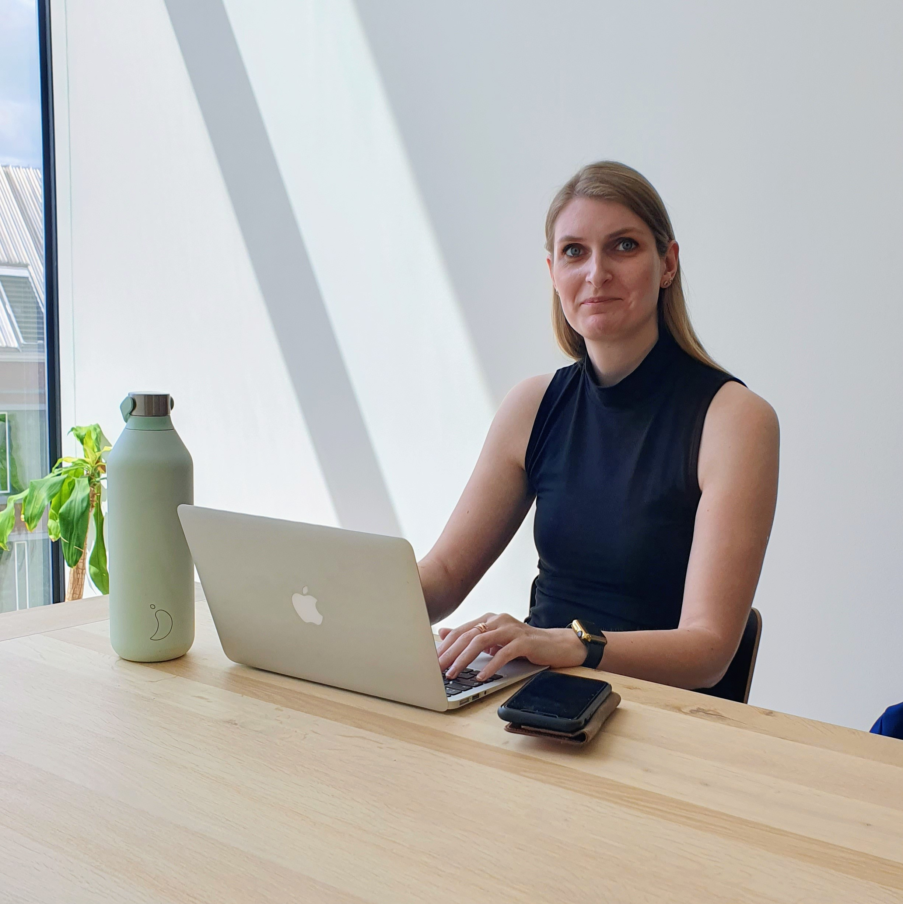

Hoi, ik ben Janneke!

Hoi! Ik ben Janneke, een studente aan Van Hall Larenstein in Velp richting Equine, Sports and Business. Momenteel ben ik ook minor studente aan de Wageningen Universiteit, met de focus op Digitale Marketing and Consumer Studies. Naast mijn studie verdiep ik me in front-end development. Ik hoop dat ik later mijn liefde voor het programmeren en designen kan combineren met mijn marketing kennis!
Buiten mijn studies wandel ik graag op de Veluwe, sport ik of duik ik in een leuk boek!
~ Hier komen projecten ~
~ Hier kan je contact met me opnemen ~